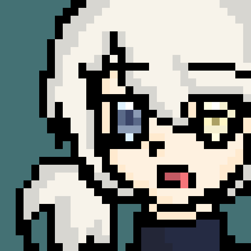

你好呀，我是 YKY！欢迎光临我的复古小星球 ^v^ 我喜欢千禧年前后的互联网美学——像素字体、Windows 98 窗口、粉粉的电子梦幻感。我热衷于把脑子里的奇思妙想做成可以在浏览器里直接玩的互动小游戏和网页，从合成大西瓜到水波纹、万花筒特效，每一个作品都是我认真攒下的小星星。
以下是 Y2K 个人星球网站从需求到交付的完整开发过程总结，涵盖需求定义、原型设计、提示词策略、版本迭代记录与问题解决过程。完整文档请见底部附录。
以下是本网站从立项到交付的完整迭代记录，每次更新均包含「改了什么、为什么改、效果如何、下一步是什么」四个维度，便于回溯开发决策与成长轨迹。
本网站是我第一次独立完成的完整前端项目，从需求分析到设计落地，从特效实现到问题排查，整个过程让我在技术、设计、思维三个维度都有了显著成长。以下是我对本次项目的全面复盘。
这个网站从一行代码开始，到现在 7 个页面、3 套引擎、4 份文档，每一个像素都是认真攒下的小星星。它不完美，但它是我的。感谢 Y2K 美学给了我灵感，感谢 AI 工具给了我助力，更感谢那个愿意从零开始、一步步把想法变成现实的自己。未来的路还很长，继续在自己的星球上发光吧 ♡